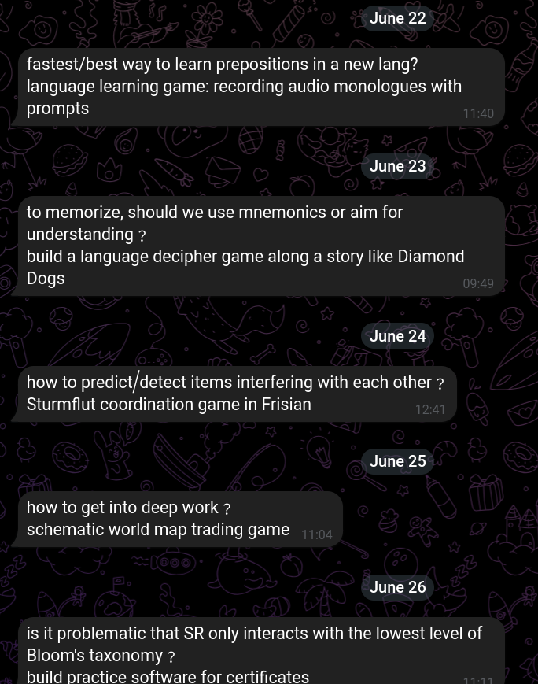

attempt to regularly think about open questions: Telegram bot
There is a notion of "12 favorite problems", attributed (as many things are), to Feynman: Have a list of a dozen or so open questions in your head (whatever that means), so you have a chance to make sudden leaps when new information comes in, randomly during your day.
I believe that this solves an important problem, but isn't at all easy to actually do.
My first shot at this was to maintain a simple plaintext list of questions in dumb notes, then have my laptop run a python script sending me one of them per day, yielding a chat like this:

Implementing a personal telegram bot like this is really quick, by the way.
However, while this seemed neat, this implementation turned out not to be really worth it:
- I was lacking a habit to regularly maintain and update the list of questions
- The daily question would arrive only after I turned on my computer, which prevented any time-based habit from forming
- Looking at a question just once per day didn't really help to solidify it as a daily lodestone in my head, I'd think about it for a couple seconds and then forget about it